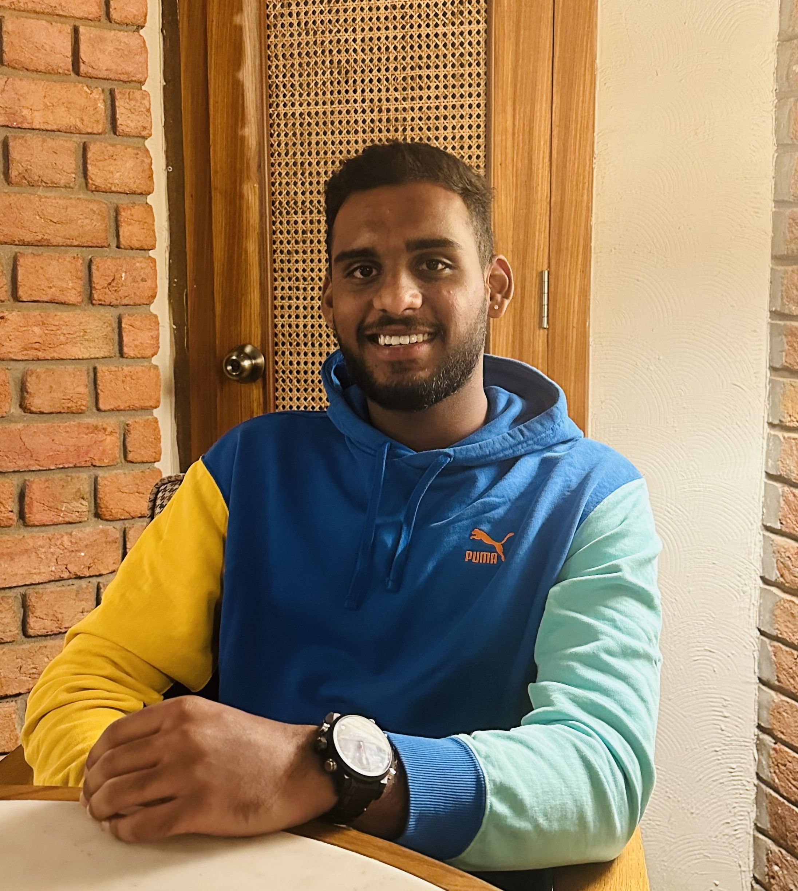

Hii There,
Student At Algonquin College
Hii There,
Student At Algonquin College
Innovative tech enthusiast with a passion for turning data into actionable insights and solutions. Bringing a unique blend of programming prowess, database expertise, and IT support skills, I excel at unraveling complex challenges and driving efficiency. Proficient in Java, SQL, and cutting-edge analytics tools like Tableau and Power BI, I thrive in environments that demand both technical acumen and creative problem-solving. I am poised to contribute meaningfully to projects that require precision, teamwork, and forward-thinking strategies.
Algonquin College
Ottawa, ON
September, 2022 - Present
Upgrad Campus
April, 2022 - September, 2022
Coursera
June, 2024 - August, 2024
Amazon Fulfillment Centre | Ottawa, ON
November 2022 - Present
Real Candaian Superstore | Ottawa, ON
October, 2022 - November, 2022
Tools: HTML, CSS, JavaScript,, MySQL, Node.js
Tools: Excel, MySQL, Power BI
Tools: Android Studio, GitHub, Java, SQL Lite